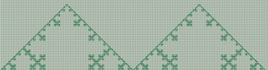
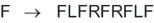
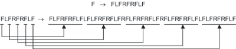

Der Biologe Aristid Lindenmayer wandte kontextfreie Grammatiken an, um das Wachstum von Pflanzen zu beschreiben. Wir können in Kara ein einfaches Turtle-Graphiksystem simulieren, mit dem wir einige Beispiele von Lindenmayer-Systemn studieren können. Das Turtle-System kenne die Bewegungsbefehle der Kara-Umgebung: F für einen Schritt vorwärts sowie L und R für Links- beziehungsweise Rechtsdrehung um 90°. Diese drei Befehle können als Alphabet für Lindenmayer-Grammatiken benutzt werden. Ein Wort, das aus den Buchstaben dieses Alphabets gebildet wird, ist eine Wegbeschreibung für die Turtle. Eine einfache Grammatik besteht beispielsweise lediglich aus der folgenden Ersetzungsregel:

Diese Ersetzungsregel wird wiederholt auf ein beliebiges Wort angewendet, das aus den Buchstaben F, L und R besteht. Dabei wird jeweils jedes Vorkommen von F entsprechend der Ersetzungsregel ersetzt. Betrachten wir als Beispiel, wie die Regel zwei Mal auf das Wort "F" angewendet wird:

Die Länge der resultierenden Zeichenkette wächst exponentiell. Die Zeichenkette beschreibt eine immer detaillierter werdende Schneeflockenkurve, wie sie in obersten Abbildung dargestellt ist.
Programmieren Sie Kara so, dass er einfache Lindenmayer-Systeme anwenden und darstellen kann! Sie benötigen dazu eine Suche-/Ersetze-Regel, die angibt, wie die Zeichenkette generiert werden soll, sowie Wort, das als Ausgangspunkt für die Ersetzungen dient. Ihr Programm muss die Ersetze-Regel auf dieses Wort mehrmals anwenden und die dabei entstehende Zeichenkette schliesslich "interpretieren", das heisst, die in ihr enthaltenen Befehle durch Kara ausführen lassen.